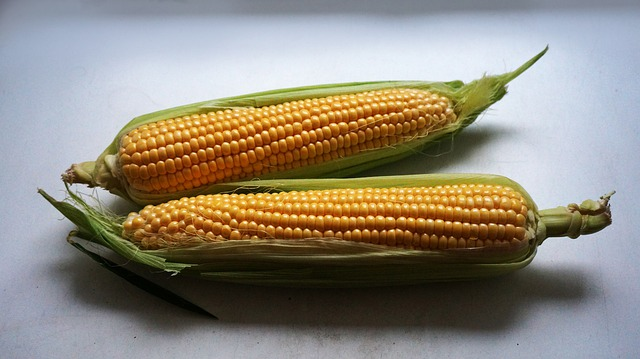

Kokta majskolvar

Majskolvar finns både djupfrysta, konserverade och färska. Kokta majskolvar smakar gott som förrätt, supé eller lättare lunch. Servera med salt och smör.
Ingredienser:
- 2st majskolvar
- 0,5 tsk salt
Tillbehör:
Så här Lagar Du:
- Ta fram en stor gryta, jag brukar använda min 5-literskastrull.
Ta bort bladen och trådarna från majskolvarna och skär eventuellt av de yttersta ändarna så att majskolvarna får plats i grytan. Kontrollera gärna detta innan du häller vatten i grytan..
- Häll vatten i grytan. Tillsätt salt. Det ska vara så mycket vatten att kolvarna täcks av vattnet och de översta kolvarna flyter på ytan.
- När vattnet kokar, lägg i majskolvarna och låt koka ca 7 min med locket på glänt. Sänk värmen till medelhög så det inte kokar över.
- Plocka upp majskolvarna ur vattnet och servera med smör och salt eller ät dem som de är.
(För att se när de är klara kan man testa med en provsticka i ett majskorn om man vill. Annars så ser man att majskolvarna fått en gulare färg och det brukar alltid vara lagom att ta upp dem efter exakt 7 minuter tycker jag.)
(OBS! Kokar du för länge blir majskornen hårda så låt dem absolut inte koka mer än 10 minuter. Men jag rekommenderar 7 minuter, det blir alltid perfekt resultat för mig.)
Serveringstips:
Jag har fått särskilda "majskolvsbestick" men om man inte har det kan man trycka in en gaffel i varje ände på majskolvarna eller vänta några minuter tills de svalnar och använda fingrarna.
Vill du ha min källa för detta recept?
Besök NTI-gymnasiets hemsida
Sida gjort av Andreas Yousef